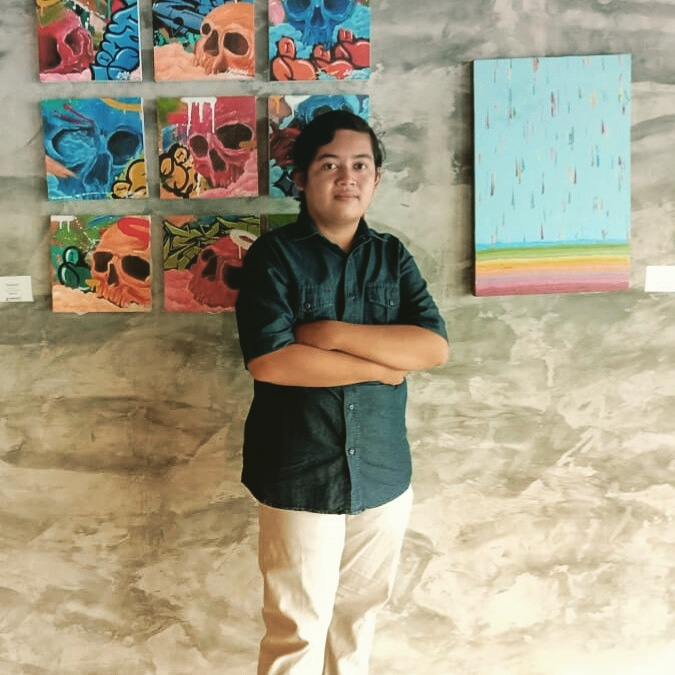

Mengenai Saya

Perkenalan nama saya Saputra. Saya seorang mahasiswa teknologi informasi. Saat ini berada di semester 4 di Universitas Prokramasi 45, Yogyakarta. Sejak memasuki dunia perkuliahan, saya telah mempelajari berbagai macam konsep dan pengetahuan di berbagai domain IT, seperti bahasa emrograman, jaringan komputer, database, sistem informasi, keamanan informasi, dll.
Selama studi saya, saya terlibat dalam berbagai proyek dan tugas yang berkaitan dengan penggunaan teknologi informasi. Saya telah mengembangkan keterampilan pemrograman saya dalam bahasa seperti C++, Pyhton, HTML, CSS, PHP, dan Java. Saya juga belajar tentang administrasi jaringan komputer, termasuk cara mengonfigurasi dan mengelola jaringan area lokal, dan belajar tentang protokol dan teknologi jaringan yang lebih luas.
Saya juga mempelajari konsep basis data, desain basis data, menggunakan SQL untuk manajemen data, dan memahami sistem manajemen basis data. Saya juga tertarik dengan pengembangan sistem informasi, dan terlibat dalam pembuatan aplikasi berbasis web dan menggunakan alat pengembangan seperti Framework.